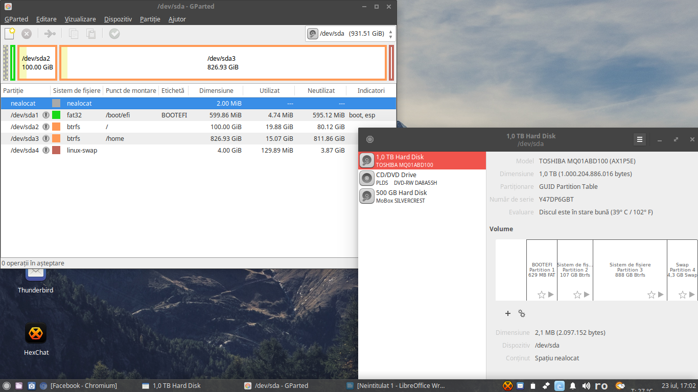

mâzgăliturile mele despre orice
Am trecut de la Linux Mint 18 Cinnamon la Xubuntu 16.04.1
Alaltăieri (21 iulie 2016) am dat jos Linux Mint 18 Cinnamon pentru că toate se porneau destul de greu inclusiv sistemul. Configurația laptopului nu pot spune că este așa de slabă dar în comparație cu Linux Mint Xfce, versiunea cu Cinnamon se mișcă greu, dar și Mint Xfce în comparație cu Xubuntu merge destul de greu.
PS: Configurația laptopului este:
Lenovo G50-70
-- Procesor: Intel Core i5-4210U 1.7 GHz Haswell
-- Memorie: 4GB DDR3L 1600 MHz
-- Placã video: Intel HD Graphic 4400 & AMD Radeon R5 M230 2048MB DDR3 (dedicată)
-- Ecran: 15.6" 1366x768 px HD LCD LED
-- HDD: 1TB 5400 rpm
Înainte să dau jos Linux Mint, am „ars” pe o memorie USB Xubuntu 16.04.1 și am trecut la setarea laptopului începând cu formatarea discului dur din modului de LiveUSB al Xubuntu.
Formatarea discului dur am realizat-o după schița următoare:
- formatul disccului este GPT
- nealocat 2MB
- /boot/efi – fat32 – 599,86 MB
- / - btrfs – 100 GB
- /home – btrfs – 826,93 GB
- swap – 4 GB
După terminarea formatării, am trecut la instalarea sistemului, când am ajuns la pasul partiționări am selectat partiționarea manuală pentru discul dur era pregătit. Instalarea s-a derulat repede am putut intra în proaspăta distribuție instalată.
Următorul pas a fost să șterg aplicațiile care nu mi-au trebuit, să instalez aplicațiile necesare și să fac actualizarea sistemului. Acest pas a durat mai mult decât instalarea propriu-zisă a distribuției.
Astăzi m-am mai ocupat de câteva setări a sistemului, instalarea temei plus setările programelor care au legătură cu internetul (firefox, chromium, thunderbird, xhechat).
Toată această muncă în total nu mi-a luat nici o 12 ore, maxim 3,4 ore a durat toată operațiunea.
